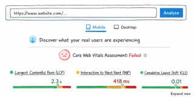

Web performance goes beyond loading speed, it also depends on how quickly the page responds to user interactions.
This is exactly what Interaction to Next Paint (INP) measures.
What is INP?
INP (Interaction to Next Paint) is one of the 3 Core Web Vitals metrics and captures the delay between a user interaction (like a click or tap) and the next visual update on the screen.
A good INP is:
- ≤ 200ms → good
- 200–500ms → needs improvement
- > 500ms → poor
In practice, even small delays can significantly impact how responsive a product feels, especially in interaction-heavy interfaces. The uncertainty and frustration about whether the action worked often lead users to make repeated clicks or abandon tasks.
Once a page is loaded, the browser still has work to do:
- calculating styles
- running JavaScript
- updating layout
- rendering changes
If that work is too heavy, interactions get delayed. From the user’s perspective, this feels like lag, even if the page “loaded fast”.
In this context, reducing browser work becomes key to improving responsiveness.
Quick guide to improve INP
Below I selected a list of tweaks that can help improve INP metric prioritized by level of effort to implement:

1. Reduce DOM size
Large DOM trees increase the cost of almost everything the browser does.
Every interaction can trigger:
- style recalculations
- layout updates
- paint operations
As a rule, keeping the DOM under ~1500 nodes helps maintain better performance.
Common issues:
- deeply nested structures
- unnecessary wrappers
- rendering large lists all at once
2. Use content-visibility: auto
Speaking of large DOMs, if you can’t remove elements, you can hide them from the browser’s initial radar with content-visibility.
The content-visibility CSS property allows the browser to skip rendering content that is outside the viewport. This means less work during initial load and less work during interactions, it’s especially useful for long pages and content-heavy layouts.
To avoid negatively impact accessibility or SEO, provide a placeholder size (for example, using contain-intrinsic-size), so the browser can reserve space for the element and prevent Cumulative Layout Shift (CLS).
3. Be careful with inline SVGs
Inline SVGs can be a great optimization because they avoid additional HTTP requests. However, they also increase DOM size.
Each SVG becomes part of the DOM tree, adding to the overall rendering cost, reserve inline SVGs for essential.
4. Use transform and opacity for animations
Prefer transform and opacity for animations triggered by user interactions, as they avoid layout recalculations or repaints in the browser.
Avoid using animating properties like width, height, or top/left.
5. Avoid forced synchronous layouts (layout thrashing)
Layout thrashing happens when DOM reads and writes are interleaved, forcing the browser to recalculate layout multiple times during an interaction.
Modern browsers try to batch updates for efficiency, however, this optimization breaks when layout information is requested immediately after a change.
For example:
element.style.width = "100px"; // write element.offsetHeight; // read => forces layout
Each read requires an up-to-date layout, so the browser is forced to recalculate it synchronously. Avoid forcing synchronous layouts by separating DOM reads and writes.
Properties such as offsetHeight, offsetWidth, getBoundingClientRect() and scrollTop can trigger layout calculations, so they should be used carefully during interactions.
6. Debounce/throttle event handlers
Events like: scroll, input, resize and typing can be triggered dozens of times per second, this can easily turns into long tasks.
Debounce pauses execution until events stop for a specified time (ideal for search inputs), while throttle limits execution to once every specified interval (ideal for scroll tracking).
7. Be mindful of third-party scripts
Even if your own code is optimized, third-party scripts often aren’t.
JavaScript runs on the main thread. Long tasks block the browser from responding to user input, making them a common cause of poor INP.
Common offenders:
- analytics tools
- chat widgets
- A/B testing scripts
Review what’s running on your page and prioritize what truly matters.
When possible, defer non-critical work using strategies such as requestIdleCallback(), so scripts execute during idle periods instead of competing with user interactions.
Server side tagging are also a good solution to significantly reduce client-side overhead, depending on your setup. Google Tag Manager offers a server-side option.
Final thoughts
Most performance issues aren’t caused by a single problem, but by multiple small decisions accumulating over time.
Improving INP often means choosing between competing priorities, like delaying scripts, simplifying UI, or reducing functionality.
You won’t improve INP with isolated optimizations, every decision has a cost, what looks like a good solution may not hold in the context of the full system.
Understanding those trade-offs, and making decisions based on real constraints, is what leads to consistently responsive interfaces.